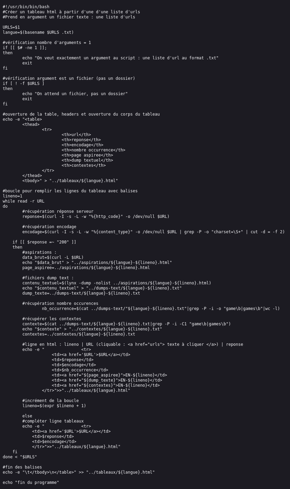
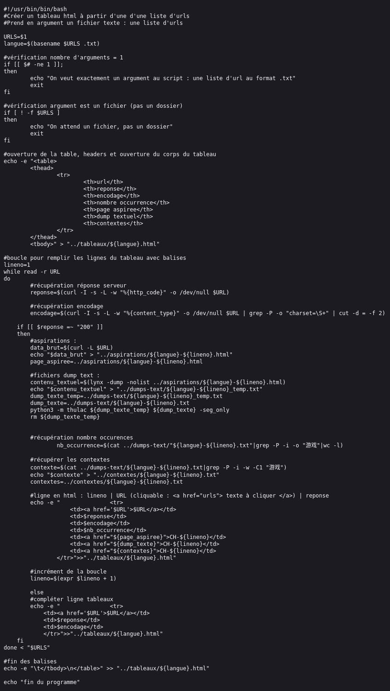

Scripts Tableaux
Afin de générer un tableau html pour recenser les informations de nos pages web et de notre corpus, nous avons écrit un script bash par langue.
Ces scripts prennent comme une liste d'URL sous forme d'un fichier txt.
Pour chaque URL, la réponse serveur, le contenu html et textuel de la page ainsi que son encodage ont été obtenus à l'aide de la commande "curl".
La commande "grep" a été utilisée en combinaison avec une expression régulière afin de relever les occurences du mot "jeu".
Le nombre d'occurences du mot "jeu" a également été compté, et des fichiers "contextes" (qui ne contiennent que quelques lignes avant et après chaque occurence du mot "jeu") ont été créés.
L'ensemble de ces informations ont été rassemblées dans des tableaux html (un par langue) comportant les colonnes suivantes :
- - le numéro de ligne pour chaque URL
- - le code de retour serveur
-
- - l'encodage du texte
- - le nombre d'occurence du mot "jeu" dans la page
- - la page html aspirée
- - le fichier dump textuel
- - le fichier contexte
Script tableau anglais
Lien du script

Script tableau chinois
Pour le chinois, un script python thulac a été appelé dans le script bash pour tokeniser le texte.
Lien du script

Script tableau français